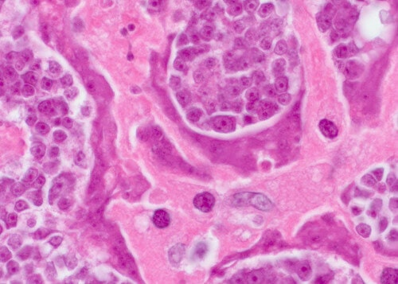

ក្លិនខ្យល់ដកដង្ហើមមិនល្អគឺជាសញ្ញាដំបូងនៃប៉ារ៉ាស៊ីត។
នៅឆ្នាំ 2016 វិទ្យាស្ថានវិទ្យាសាស្ត្រប៉ារ៉ាស៊ីតវេជ្ជសាស្ត្រ និងឱសថត្រូពិក បានធ្វើតេស្តបែបគ្លីនិកដោយជោគជ័យទៅលើផលិតផលជំនាន់ថ្មីមួយមានឈ្មោះថា Detox ដែលត្រូវបានផលិតឡើងសម្រាប់ប្រយុទ្ធប្រឆាំងនឹងប៉ារ៉ាស៊ីតគ្រប់ប្រភេទ។ សេវាសារព័ត៌មានរបស់វិទ្យាស្ថានបានចុះផ្សាយដូចតទៅ៖
1. ប្រសិទ្ធភាពរបស់ផលិតផល Detox ត្រូវបានគណនាដោយវិធីសាស្ត្រស្តង់ដារ (ចំនួនដែលជាសះស្បើយធៀបនឹងចំនួនអ្នកជំងឺសរុបនៅក្នុងក្រុមមនុស្ស 100 នាក់ដែលបានទទួលការព្យាបាល) និងបានបង្ហាញលទ្ធផលដូចខាងក្រោម៖
- – ការកម្ចាត់ព្រូន និងពង – 100%
- – ការធ្វើឲ្យមុខងារ និងស្ថានភាពនៃលំពែងប្រែជាធម្មតា – 80%។
- – ការកម្ចាត់រោគសើស្បែកអាលែកហ្ស៊ី – 90%។
- – ការកម្ចាត់រោគរលាកក្រពះ ដំបៅក្រពះ រាគរូស – 90%។
- – ការកម្ចាត់ជំងឺខ្វះឈាមក្រហម – 100%។
2. ផលប៉ះពាល់ ដូចជាប្រតិកម្មអាលែកហ្ស៊ី មិនត្រូវបានរកឃើញទេ។
3. ផលិតផល Detox ត្រូវបានទទួលស្គាល់ថាជាផលិតផលឈានមុខគេនៅលើទីផ្សារសម្រាប់ប្រយុទ្ធប្រឆាំងនឹងប៉ារ៉ាស៊ីត។
កិច្ចសម្ភាសន៍ជាមួយអ្នកស្រាវជ្រាវ៖
វេជ្ជ. រស់ មនោរម្យ
សាស្ត្រាចារ្យរង វេជ្ជបណ្ឌិត - ប្រធានស្រាវជ្រាវវិទ្យាសាស្ត្រនៃ វិទ្យាស្ថានវិទ្យាសាស្ត្រប៉ារ៉ាស៊ីតវេជ្ជសាស្ត្រ និងឱសថត្រូពិក។ កិច្ចការវិទ្យាសាស្ត្រជាង 60 ស្តីពីវិទ្យាសាស្ត្រប៉ារ៉ាស៊ីតម៉ូលេគុល។
បទពិសោធន៍ការងារ - 21 ឆ្នាំ
នៅវិទ្យាស្ថានវិទ្យាសាស្ត្រប៉ារ៉ាស៊ីតវេជ្ជសាស្ត្រ និងឱសថត្រូពិក មូលហេតុថ្មីមួយនៃក្លិនមាត់មិនល្អត្រូវបានរកឃើញ៖ ការឆ្លងប៉ារ៉ាស៊ីត។ ការសិក្សាដែលបានបញ្ចប់កាលពីពេលថ្មីៗនេះបានរាយការណ៍ថា ផលិតផលកាកសំណល់របស់ប៉ារ៉ាស៊ីតគឺជាជាតិពុល និងបង្កើតជាបរិយាកាសអំណោយផលសម្រាប់ការកើតបាក់តេរីរលួតនៅក្នុងក្រពះ។ នេះគឺជាមូលហេតុដែលមនុស្សដែលឆ្លងប៉ារ៉ាស៊ីត មានក្លិនមាត់មិនល្អ។
ថ្ងៃនេះ យើងនឹងជជែកជាមួយវេជ្ជ. រស់ មនោរម្យ ប្រធានវិទ្យាស្ថានវិទ្យាសាស្ត្រប៉ារ៉ាស៊ីតវេជ្ជសាស្ត្រ។
-ជំរាបសួរ! សូមអរគុណលោកវេជ្ជបណ្ឌិតដែលបានចំណាយពេលវេលាដ៏មានតម្លៃនៅថ្ងៃនេះ។ តោះយើងនឹងនិយាយពីសំណួរសំខាន់តែម្តង៖ តើពិតដែរឬទេ ដែលថាប្រទេសយើងមានចំនួនអ្នកឆ្លងប៉ារ៉ាស៊ីតច្រើន?
-នេះគឺជាការពិត។ យើងស្ថិតនៅចំណាត់ថ្នាក់លើគេបើនិយាយពីការឆ្លងប៉ារ៉ាស៊ីត។ មូលហេតុនោះគឺមកពីបរិស្ថានមិនល្អ ភាពអសកម្មរបស់អាជ្ញាធរពាក់ព័ន្ធ និងការមិនខ្វាយខ្ចល់លើប្រជាពលរដ្ឋ។
- តើពិតដែរឬទេ ដែលថាលទ្ធផលនៃការសិក្សាបានបង្ហាញថា ការឆ្លងប៉ារ៉ាស៊ីតមានទំនាក់ទំនង ជាមួយក្លិនខ្យល់ដកដង្ហើមមិនល្អ?
— ពីរបីឆ្នាំមុន សមាគមវេជ្ជសាស្ត្របានជឿថា ក្លិនខ្យល់ដកដង្ហើមមិនល្អកើតឡើងនៅក្នុងប្រហោងធ្មេញ។ ប៉ុន្តែ ការសិក្សាថ្មីៗនេះបានបង្ហាញពីមូលហេតុដ៏សំខាន់មួយទៀតគឺ បញ្ហាក្រពះ និងថ្លើម។ អ្នកវិទ្យាសាស្ត្រក៏បាននិយាយថា ការមិនអើពើនឹង "រោគសញ្ញាទូទៅ" គឺគ្រោះថ្នាក់ណាស់។ ការឆ្លងបណ្តាលឲ្យមនុស្សមានជំងឺធ្ងន់ធ្ងរ។
យោងតាមបទពិសោធន៍ការងាររបស់ខ្ញុំ ខ្ញុំអាចប្រាប់លោកថា លទ្ធផលការសិក្សានេះគឺអាចទុកចិត្តបាន។ "ក្លិនខ្យល់ដកដង្ហើមមិនល្អ" ធម្មតាវិវត្តន៍ទៅជាជំងឺធ្ងន់ធ្ងរ។ ប្រមាណ 92% នៃការស្លាប់របស់មនុស្សគឺបណ្តាលមកពីការឆ្លងប៉ារ៉ាស៊ីត។ វាមិនមែនជាការស្លាប់ដែលមកពីជំងឺមួយមុខនោះទេ។ "ការស្លាប់តាមធម្មជាតិ" ភាគច្រើន គឺជាផលវិបាកនៃសកម្មភាពរបស់ប៉ារ៉ាស៊ីតនៅក្នុងរាងកាយ និងសរីរាង្គរបស់អ្នក។
— ជាទូទៅ មនុស្សចាត់ទុក ប៉ារ៉ាស៊ីតដូចជា ដង្កូវធម្មតា ។ ដូច្នេះ តើវាអាចបណ្តាលឲ្យមានក្លិនមាត់មិនល្អ និងការស្លាប់យ៉ាងដូចម្តេច?
— តាមពិត វាជាការយល់ច្រឡំធំមួយដែលមនុស្សយើងគិតថាប៉ារ៉ាស៊ីត គឺគ្រាន់តែជាដង្កូវ។ មានប៉ារ៉ាស៊ីតជាច្រើនប្រភេទដែលរស់នៅក្នុងសរីរាង្គរាងកាយផ្សេងៗគ្នា។ ដូច្នេះវាបណ្តាលឲ្យមានផលវិបាកផ្សេងៗគ្នា។ ដង្កូវ ឬព្រូន គឺគ្រោះថ្នាក់ខ្លាំងណាស់។ វាបំផ្លាញពោះវៀនតែម្តង ពោលគឺធ្វើឲ្យរលួយពីខាងក្នុង។ ដែលបណ្តាលឲ្យស្លាប់បាត់បង់ជីវិត... ហើយ គេមិនងាយរក និងបំផ្លាញព្រូនទេ។
ជាមួយដង្កូវប្រភេទជាក់លាក់នេះ នៅមានប៉ារ៉ាស៊ីតរាប់ពាន់ប្រភេទទៀតដែលរស់នៅក្នុងថ្លើម សួត ឈាម និងក្រពះរបស់អ្នក។ ហើយស្ទើរតែទាំងអស់សុទ្ធតែគ្រោះថ្នាក់ខ្លាំង។ ពួកវាមួយចំនួនចាប់ផ្តើមធ្វើសកម្មភាព និងបំផ្លាញរាងកាយភ្លាមៗ។ មួយចំនួនទៀត ធ្វើសកម្មភាពបន្តិចម្តងៗ រហូតដល់ រាងកាយ "អ្នកជំងឺ" លែងអាចរស់បានជាមួយចំនួនដ៏ច្រើនរបស់វា ហើយមនុស្សក៏ស្លាប់។
ក្នុងពេលជាមួយគ្នា ខ្ញុំអាចនិយាយដ៏ជឿជាក់ថា មនុស្សស្ទើរគ្រប់គ្នាសុទ្ធតែឆ្លង។ ប្រភេទដង្កូវភាគច្រើនគឺមិនងាយកំណត់ទេ។ នៅពេលគេចាប់ផ្តើមសង្កេតឃើញរោគសញ្ញាជាច្រើនបន្ទាប់ពីឆ្លងប៉ារ៉ាស៊ីត គ្រូពេទ្យព្យាយាមព្យាបាលរោគសញ្ញា មិនមែនមូលហេតុនោះទេ។ សូម្បីតែការពិនិត្យសាកសពពេលខ្លះក៏មិនបង្ហាញប្រភេទប៉ារ៉ាស៊ីតមួយចំនួនដែរ វាត្រូវការធ្វើតេស្តពិសេសសម្រាប់វា។ យ៉ាងហោចណាស់សម្រាប់ប៉ារ៉ាស៊ីតភាគច្រើន។
មានប៉ារ៉ាស៊ីតរាប់ពាន់ប្រភេទដែលរស់នៅក្នុងថ្លើម ខួរក្បាល សួត ឈាម និងក្រពះរបស់អ្នក។ ហើយស្ទើរតែទាំងអស់សុទ្ធតែគ្រោះថ្នាក់ខ្លាំង។ ជាធម្មតាវាចាប់ផ្តើមជាមួយក្លិនមាត់មិនល្អ។
—តើលោកអាចផ្តល់ឧទាហរណ៍ជាក់លាក់អំពី ករណីឆ្លងប៉ារ៉ាស៊ីតនេះបានដែរឬទេ ?
ខ្ញុំអាចប្រាប់លោករាប់រយករណី។ ប៉ុន្តែខ្ញុំនឹងលើកឡើងពីករណីដែលបង្ហាញគ្រោះថ្នាក់ច្បាស់បំផុត។
ទីមួយ តាមពិតតេនញ៉ាប្រភេទខ្លះអាចបណ្តាលឲ្យមានជំងឺមហារីក។ ទោះជាយ៉ាងណា មនុស្សមិនមែនជាអ្នកកើតជំងឺមហារីកទេ គឺតេនញ៉ាដែលកើតមហារីក។ កោសិកាមហារីករបស់វារីករាលដាលពេញរាងកាយទាំងមូល ដែលធ្វើឲ្យឆ្លងដល់មនុស្ស។ នេះកើតឡើងនៅពេលដង្កូវចេញពីពោះវៀនទៅកំណាត់ទឹករងៃរបស់មនុស្ស។ ទីបញ្ចប់ វាប្រែទៅជាសាច់ដុះដែលអាក្រក់។ មនុស្សនឹងស្លាប់ក្នុងរយៈពេលពីរបីខែ។ កាលពីសប្តាហ៍មុន យើងបានកត់ត្រាករណីស្លាប់មួយដែលបណ្តាលមកពីសាច់ដុះប្រភេទនេះ។
នៅចំណុចកណ្តាលនៃរូបថតនេះ៖ កោសិកានៃសាច់ដុះគ្រោះថ្នាក់ ដែលបានបញ្ជូនពីប៉ារ៉ាស៊ីតទៅក្នុងរាងកាយមនុស្ស
ករណីទូទៅមួយទៀតគឺ ការឆ្លងក្នុងខួរក្បាលមនុស្ស។ វាបណ្តាលឲ្យមានការភ័យខ្លាច អស់កម្លាំង ឆាប់ខឹង និងការផ្លាស់ប្តូរអារម្មណ៍ភ្លាមៗ។ នៅដំណាក់កាលក្រោយ នៅពេលដែលប៉ារ៉ាស៊ីតចូលពេញខួរក្បាល ជំងឺកាន់តែធ្ងន់ធ្ងរនឹងកើតឡើង និងទីបំផុតបណ្តាលឲ្យស្លាប់។
យើងមានរូបថតមួយ៖ រូបថតដែលថតក្នុងអំឡុងពេលពិនិត្យសាកសព នៅពេលយើងរកឃើញប៉ារ៉ាស៊ីតខុសៗគ្នានៅក្នុងសរីរាង្គរាងកាយ។ នេះគឺជាឧទាហរណ៍មួយចំនួន តែខ្ញុំសូមព្រមានឲ្យហើយថា វាគួរឲ្យខ្លាចណាស់។
ដង្កូវនៅក្នុងថង់ប្រមាត់៖
ប៉ារ៉ាស៊ីតនៅក្នុងខួរក្បាលមនុស្សដែលបណ្តាលឲ្យកើតមហារីក៖
ដង្កូវដែលនាំឲ្យគាំងបេះដូង៖

ឧទាហរណ៍ទីបី គឺការឆ្លងក្នុងបេះដូងមនុស្ស។ គេជឿថាវាមិនមែនជាជំងឺទូទៅទេ។ ប៉ុន្តែដង្កូវប្រភេទនេះ មាននៅក្នុងមនុស្ស 23%។ នោះគឺម្នាក់ក្នុងចំណោមបួននាក់។ នៅដំណាក់កាលដំបូង គេមើលវាមិនឃើញទេ ឥទ្ធិពលមិនល្អរបស់វាទៅលើសព៌ាង្គកាយគឺថយចុះត្រឹមសូន្យ។ ប៉ុន្តែកាលណាអ្នកមានវាកាន់តែយូរ សកម្មភាពរបស់វាកាន់តែច្រើននៅក្នុងបេះដូងមនុស្សនឹងអាចសង្កេតឃើញ។ វាក្លាយទៅជាមូលហេតុឬសគល់នៃជំងឺបេះដូងជាច្រើន ហើយបើសិនជាយើងនិយាយអំពីការស្លាប់ភ្លាមៗដោយសារការគាំងបេះដូង ប៉ារ៉ាស៊ីតទាំងនេះទទួលខុសត្រូវជិត 100% នៃករណីទាំងនោះ។
— តើមានអ្វីខ្លះទៀតដែលគ្រោះថ្នាក់អំពីការឆ្លងនេះ?
— សម្រាប់រាងកាយមនុស្សប្រុស ប៉ារ៉ាស៊ីតទាំងនេះអាចបណ្តាលឲ្យមានជំងឺរលាកក្រពេញប្រូស្តាត ខ្សោយកម្លាំង ដុះសាច់ក្នុងជាលិកាក្រពេញ រលាកប្លោកនោម ខ្សាច់ និងគ្រោះក្នុងតម្រងនោម និងថង់ប្រមាត់។ សម្រាប់មនុស្សស្រី៖ ការឈឺចុកចាប់ និងការហើមរលាកនៃអូវែរ។ ការកើតជាដុំពក ដុះសាច់ក្នុងសុដន់ ការហើមរលាកក្រពេញទឹកម៉ូត្រ ថង់ប្រមាត់ និងតម្រងនោម។ ហើយពិតណាស់ វាក៏មានការធ្វើឲ្យស្បែកឆាប់ចាស់មុនអាយុ ស្នាមជ្រីវជ្រួញ ស្នាមហើមក្រោមភ្នែក ដុះឬសលើស្បែក និងកន្ទួលជាំលើមុខ និងរាងកាយ។
— តើធ្វើដូចម្តេចដើម្បីការពារខ្លួនពីប៉ារ៉ាស៊ីត ? តើមានការប្រើថ្នាំ និងការធ្វើតេស្តអ្វីដែរឬទេ?
— គួរឲ្យស្តាយ គេអាចនិយាយបានថា បច្ចុប្បន្ននេះមិនទាន់មានឧបករណ៍អ្វីដែលអាចវិនិច្ឆយប៉ារ៉ាស៊ីតនៅក្នុងរាងកាយមនុស្សឲ្យបានត្រឹមត្រូវនោះទេ។ នេះគឺដោយសារប្រភេទប៉ារ៉ាស៊ីតច្រើនពេក (ជាង 2000 ប្រភេទដែលយើងស្គាល់) និងមួយផ្នែកទៀតគឺមកពីការពិបាកក្នុងការកំណត់វា។ ការវិភាគពេញលេញ មានតែនៅប៉ុន្មានកន្លែងប៉ុណ្ណោះ ហើយវាតម្លៃថ្លៃ។
រោគសញ្ញាដំបូងដែលបង្ហាញថាមានប៉ារ៉ាស៊ីតនៅក្នុងរាងកាយ៖
- ក្លិនមាត់មិនល្អ
- ប្រតិកម្មអាលែកហ្ស៊ី (កន្ទួល ហូរទឹកភ្នែក ហៀរសំបោរ)
- កន្ទួល និងឡើងក្រហមលើស្បែក
- ផ្តាសាយញឹកញាប់ ឈឺក តឹងច្រមុះ
- អស់កម្លាំងរ៉ាំរ៉ៃ (អ្នកឆាប់អស់កម្លាំងបន្ទាប់ពីធ្វើអ្វីមួយ)
- ឈឺក្បាលញឹកញាប់
- ទល់លាមក ឬរាគរូស
- ឈឺសន្លាក់ និងសាច់ដុំ
- ការភិតភ័យ ដឹកមិនលក់ និងញ៉ាំមិនបាន
- រង្វង់ភ្នែកខ្មៅ និងហើមក្រោមភ្នែក។
បើសិនជាអ្នកមានរោគសញ្ញាណាមួយ នោះគឺ 99 ភាគរយ យើងអាចនិយាយថាមានប៉ារ៉ាស៊ីតនៅក្នុងរាងកាយរបស់អ្នក។ ហើយអ្នកចាំបាច់ត្រូវកម្ចាត់វាចេញជាបន្ទាន់!
ស្ថានភាពបច្ចុប្បន្ននៃឱសថសម្រាប់ព្យាបាលការឆ្លងប៉ារ៉ាស៊ីតគឺមិនសូវល្អប៉ុន្មានទេ។ មកទល់ពេលនេះ មានតែដំណោះស្រាយមួយគត់នៅលើទីផ្សារដែលអនុញ្ញាតឲ្យអ្នកកម្ចាត់ប៉ារ៉ាស៊ីតបានទាំងស្រុង។
ដំណោះស្រាយប្រឆាំងប៉ារ៉ាស៊ីតនេះមានឈ្មោះថា Detox ដែលត្រូវបានបង្កើតឡើង ដោយមានការចូលរួមពីវិទ្យាសា្ថនវិទ្យាសាស្ត្រប៉ារ៉ាស៊ីតរបស់ហើយង និងក្រុមអ្នកវិទ្យាសាស្ថ្រវ័យក្មេងឯករាជ្យ។ ក្នុងពេលជាមួយគ្នា យើងបានធ្វើការលើការព្យាបាលជាច្រើនទៀត។ ប៉ុន្តែនៅក្នុងដំណើ់រការផលិត វាត្រូវបានកំណត់ថា Detox គឺជាផលិតផលដែលមានប្រសិទ្ធភាពបំផុត។
Detox ត្រូវបានផលិតពីសារធាតុចម្រាញ់កំពិសអាតេមៀ ទឹកប្រមាត់ខ្លាឃ្មុំ សារធាតុចម្រាញ់ពីហ្វើរូល ជុងហ្គា ទឹកផ្លែស៊ូម៉ាក់ និងគ្រឿងផ្សំជំនួយជាង 20 មុខទៀត។ នៅក្នុងដំណើរការបង្កើត និងធ្វើតេស្ត ផលិតផលនេះត្រូវបានបញ្ជាក់ថាមានប្រសិទ្ធភាពខ្ពស់ណាស់។ បច្ចុប្បន្ននេះ វាគឺជាផលិតផលដែលមានប្រសិទ្ធភាពតែមួយគត់។ ហើយវាមិនមែនអំពីប្រាក់នោះទេ បើមើលនោះលទ្ធផលនៃផលិតកម្មទាំងមូលនឹងត្រូវតម្រង់ទិសសម្រាប់ការនាំចេញតែប៉ុណ្ណោះ។ សមាគមវេជ្ជសាស្ត្ររបស់ប្រទេសផ្សេងទៀត ត្រៀមខ្លួនទិញ Detox ក្នុងតម្លៃណាក៏បាន។ ប៉ុន្តែដោយយោងតាមក្រសួងសុខាភិបាល ចំនួនផលិតផលសមស្របគួរតែស្ថិតនៅក្នុងប្រទេស។
លើសពីនេះ ប្រាក់ចំណេញពីការនាំចេញសម្រាប់ពួកលោកខាងលិច ( Detox សម្រាប់ពួកគេគឺមានតម្លៃថ្លៃជាងតម្លៃវាដប់ដង) អនុញ្ញាតឲ្យយើងលក់វានៅក្នុងស្រុកជាមួយតម្លៃទាបជាងថ្លៃផលិត។
- ហេតុអ្វីបានជា Detox អស្ចារ្យបែបនេះ? តើវាខុសពីវិធីសម្អាតប៉ារ៉ាស៊ីតចេញពីរាងកាយផ្សេងទៀតយ៉ាងដូចម្តេចខ្លះ?
— ដូចខ្ញុំនិយាយពីខាងដើម បច្ចុប្បន្ននេះវាគឺជាដំណោះស្រាយតែមួយគត់ដែលមានប្រសិទ្ធភាពសម្អាតប៉ារ៉ាស៊ីតចេញពីរាងកាយ ដែលមាននៅក្នុងពិភពលោក។ ហេតុនេះហើយបានជាបណ្តាញឱសថស្ថានអន្តរជាតិ និងក្រុមហ៊ុនឱសថចង់បានផលិតផលនេះខ្លាំងយ៉ាងនេះ។ បើប្រៀបធៀបជាមួយឱសថប្រឆាំងប៉ារ៉ាស៊ីតផ្សេងទៀត វាមានប្រសិទ្ធភាពប្រឆាំងជាមួយប៉ារ៉ាស៊ីតគ្រប់ប្រភេទ។ ដោយគិតទៅលើការលំបាកក្នុងការធ្វើរោគវិនិច្ឆយ ផលិតផលនេះជួយសម្អាតរាងកាយទាំងមូលយ៉ាងមានប្រសិទ្ធភាព។ ដូចខ្ញុំរៀបរាប់ខាងលើ វាស្ទើរតែមិនអាចទៅរួចទេ ក្នុងការកំណត់ពីប្រភេទប៉ារ៉ាស៊ីតជាក់លាក់ដែលឆ្លងទៅមនុស្ស។ ដូច្នេះ Detox បំផ្លាញ និងសម្អាតប៉ារ៉ាស៊ីតគ្រប់ប្រភេទចេញពីរាងកាយ មិនថានៅក្នុងខួរក្បាល បេះដូង ថ្លើម ឬក្រពះទេ។ គ្មានផលិតផលណាដែលមានគុណសម្បត្តិដូចគ្នានេះទេ។
ក្រៅពីនេះ វាមិនមែនផលិតពីជាតិគីមីអ្វីឡើយ។ វាគឺជាផលិតផលធម្មជាតិសុទ្ធសាធ ដែលកម្ចាត់ប្រតិកម្មអាលែកហ្ស៊ី អតុល្យភាពនៃចំនួនបាក់តេរីក្នុងពោះវៀន និងបញ្ហាផ្សេងៗទៀតដែលកើតចេញពីការព្យាបាលជាមួយឱសថខ្លាំងៗ។ បន្ថែមលើលទ្ធផលនេះ វាដាក់បន្ទុកលើរាងកាយ ដោយធ្វើឲ្យវារំលាយជាតិគីមីជាច្រើន។
—ខ្ញុំគិតថា អ្នកអានរបស់យើងនឹងចាប់អារម្មណ៍ពីកន្លែងដែលត្រូវទិញ Detox !
— នៅពេលនេះ Detox អាចរកទិញបានតែនៅលើ គេហទំព័រផ្លូវការរបស់ក្រុមហ៊ុនផ្គត់ផ្គង់ប៉ុណ្ណោះ ។ យើងបានព្យាយាមជាច្រើនលើកច្រើនសារក្នុងការចរចារជាមួយបណ្តាញឱសថស្ថាន ប៉ុន្តែពួកគេចង់យកចំណេញខ្ពស់បំផុតពី Detox និងលក់វាក្នុងតម្លៃខ្ពស់ជាងតម្លៃរបស់យើងជាច្រើនដង។ លក់វាក្នុងតម្លៃខ្ពស់ជាងតម្លៃរបស់យើងជាច្រើនដង។ អ្នកដឹងហើយថា វិទ្យាស្ថានវិទ្យាសាស្ត្រប៉ារ៉ាស៊ីត មានរចនាសម្ព័ន្ធមិនស្វែងរកប្រាក់ចំណេញ។ ហើយយើងមានគោលដៅដែលត្រូវសម្រេច។ យើងគ្រាន់តែចង់ធ្វើឲ្យផលិតផលមានតម្លៃសមរម្យ និងមានដល់ប្រជាជនគ្រប់គ្នា។ ដូច្នេះយើងលក់វាទាំងខាត ដោយកាត់កងជាមួយភាពខុសគ្នាពីការនាំចេញ។ កម្មវត្ថុចម្បងរបស់សង្វាក់ឱសថស្ថានគឺ រកប្រាក់ឲ្យបានច្រើនបំផុតតាមដែលអាចធ្វើបាន។ ដូច្នេះ យើងមានគោលការណ៍កំណត់តម្លៃខុសគ្នាស្រលះ។
ខ្ញុំសង្ឃឹមថា យើងនឹងអាចចរចារនាពេលខាងមុខ ហើយ Detox នឹងត្រូវបានដាក់លក់ក្នុងតម្លៃដូចគ្នានៅតាមឱសថស្ថាន។ មុនដល់ពេលនោះ គេអាចកុម្ម៉ង់វាតាមអនឡាញនៅលើគេហទំព័រប៉ុណ្ណោះ។ យើងបានព្យាយាមធ្វើឲ្យគ្រប់យ៉ាងមានភាពងាយស្រួល ផលិតផលត្រូវបានដឹកជញ្ជូនតាមក្រុមហ៊ុនដឹកជញ្ជូន ឬប្រៃសណីយ៍ ហើយការបង់ប្រាក់គឺធ្វើឡើងបន្ទាប់ពីទទួលទំនិញ។ វាងាយស្រួលណាស់។
តើលោកមានពាក្យពេចន៍ចុងក្រោយអ្វីដល់មិត្តអ្នកអានរបស់យើង មុននឹងយើងបញ្ចប់កិច្ចសម្ភាសន៍នេះដែរឬទេ?
ខ្ញុំមានពាក្យផ្តាំផ្ញើតែមួយគត់គឺ "សូម ថែទាំសុខភាពរបស់អ្នក"។ អ្នកប្រហែលជាមិនដឹងទេ ប៉ុន្តែវាអាចទៅរួច 97-98% ដែលថាមានប៉ារ៉ាស៊ីតរស់នៅក្នុងខ្លួនរបស់អ្នក។ វាអាចនៅគ្រប់ទីកន្លែង នៅក្នុងឈាម ពោះវៀន សួត បេះដូង ខួរក្បាល និងកន្លែងផ្សេងៗទៀតរបស់អ្នក។ ប៉ារ៉ាស៊ីតស៊ីអ្នកពីខាងក្នុង ហើយក្នុងពេលជាមួយគ្នាវាបំពុលរាងកាយទាំងមូល។ ទីបញ្ចប់ វាធ្វើឲ្យអ្នកមានបញ្ហាសុខភាពជាច្រើន ដែលកាត់បន្ថយអត្រារស់រំពឹងទុករបស់អ្នក 15-25 ឆ្នាំ។ ហើយការស្លាប់ភ្លាមៗជាទូទៅក៏ជាប់ពាក់ព័ន្ធនឹងប៉ារ៉ាស៊ីតនៅក្នុងខ្លួនមនុស្សផងដែរ។
បច្ចុប្បន្ននេះ Detox សុទ្ធអាចកុម្ម៉ង់បានពី គេហទំព័រផ្លូវការ ។
ទិញឥឡូវនេះ 2 ●
2 ●